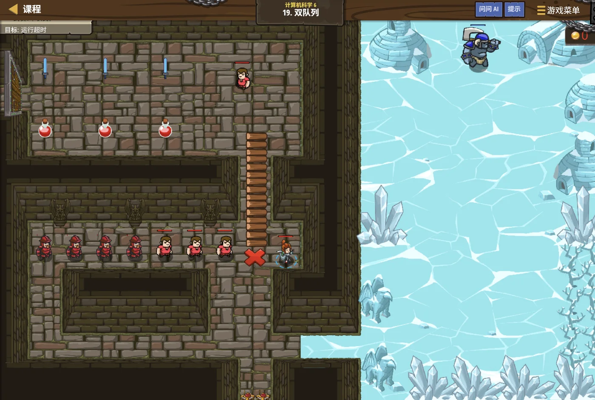

故事：两座塔前都排起了队伍——左边那座只能从顶上取，右边那座两头都通。
贺舒曼把镜子架在两塔之间：现在往里同时送同样的东西，
你看看取出来的顺序是不是一样。
你和学徒各盯一座：不一样！左边最后送进去的先出来，右边最早送进去的先出来。
对。她点头，同一个动作，两座塔的规矩完全不同——
所以用哪座，得看你想要什么顺序。
扣哒考级 · GESP C++ 六级 · 第 6 单元 | 云髓天阶 CLOUDMARROW STEPS
双塔栈队 栈、队列与循环队列
Stacks & Queues

贺舒曼
镜中先知 · 你的向导
云海之上立着两座塔。
左边那座只有一个斜顶的开口，里面一层层叠着发光的甲片——只有最上面那片拿得出来。
右边那座两头各开一个口，一队光点从左边依次流进去，又从右边依次流出来，像一条流水线。
贺舒曼站在两塔之间：左边那个叫栈，右边那个叫队列。 它们只差一条规矩——但解决的问题完全不同。
左边那座只有一个斜顶的开口，里面一层层叠着发光的甲片——只有最上面那片拿得出来。
右边那座两头各开一个口，一队光点从左边依次流进去，又从右边依次流出来，像一条流水线。
贺舒曼站在两塔之间：左边那个叫栈，右边那个叫队列。 它们只差一条规矩——但解决的问题完全不同。
贺舒曼 · 镜中先知
这是六级的最后一课，也是两种最基础的数据结构。它们看起来简单到"没什么可学的"——但程序里到处都是它们。
而且上一课学的 BFS 用队列、用栈模拟 DFS，靠的就是它们。
assets/illustrations/py-L6-06-01_twin_towers.webp
【配图位】云海之上并立两座塔：左塔细高、顶部只有一个斜开的窄口，塔身内部一层层叠放着发光的甲片状物件，最上面那一枚最亮；右塔两端各开一个口，一队光点从左口依次流入、沿塔内水平穿过、再从右口依次流出，形成流水般的队列；一名戴眼镜的先知站在两塔之间，一手各指向一座塔。
0 单元导语与目标
Unit Overview
0.1 学习目标
1学完这个单元，你将能……
- 说出栈和队列的规则区别
- 用
stack和queue完成基本操作 - 说出栈和队列各自适合解决什么问题
- 解释普通队列为什么会"假满"
- 写出循环队列的判空与判满条件
- 用数组自己实现一个栈和一个循环队列
2对标 GESP 考纲（C++ 六级）
- 理解栈与队列的逻辑结构
- 掌握栈与队列的基本操作与 STL 用法
- 理解循环队列的原理与判空判满条件
- 能用数组实现栈与循环队列
- 考核目标：能跟踪入栈出栈/入队出队的输出顺序（必考）
0.2 考纲对照
| 本单元小节 | 对应考纲条目 | 真题常考形式 |
|---|---|---|
| 1 栈 | 栈的逻辑结构 | 后进先出；入出栈后的结果（必考） |
| 2 队列 | 队列的逻辑结构 | 先进先出；出队后的队首（必考） |
| 3 它们的用处 | 栈 / 队列的应用 | 各自适合什么场景 |
| 4 循环队列 | 循环队列 | 判空 / 判满的条件（必考） |
| 5 自己实现 | 顺序存储实现 | 用数组模拟栈和队列 |
1 栈：后进先出
Stack
1.1 只有一个口
栈的规矩只有一条：后进先出（LIFO）。
栈只在一端进出东西——这一端叫栈顶，另一端封死叫栈底。
所以：最后放进去的，一定最先被拿出来。
想拿下面那个？对不起——得先把上面的都搬走。
LIFO 就是 "Last In, First Out"（后进先出）的缩写。
所以：最后放进去的，一定最先被拿出来。
想拿下面那个？对不起——得先把上面的都搬走。
LIFO 就是 "Last In, First Out"（后进先出）的缩写。
用叠盘子理解栈
TEXT
往栈里依次放入 1、2、3：
push(1) push(2) push(3)
┌───┐ ┌───┐ ┌───┐
│ │ │ 2 │ │ 3 │ ← 栈顶
│ 1 │ │ 1 │ │ 2 │
└───┘ └───┘ │ 1 │
└───┘
现在 pop() 一次，取出的是谁？
→ 取出 3（最后放进去的）
剩下 2、1
再 pop() 一次 → 取出 2
再 pop() 一次 → 取出 1
★ 出栈的顺序和入栈的顺序正好相反：3、2、1
【关键结论】
入栈顺序 1 2 3 → 出栈顺序 3 2 1记忆
栈像一叠盘子——只能从最上面拿，也只能往最上面放
所以"先放进去的被压在最底下"，最后才轮得到它
所以"先放进去的被压在最底下"，最后才轮得到它
1.2 栈的三个操作
| 操作 | 作用 | C++ STL 写法 |
|---|---|---|
| 入栈 | 把元素放到栈顶 | s.push(x); |
| 出栈 | 把栈顶元素拿走 | s.pop(); |
| 看栈顶 | 看看栈顶是谁（不拿走） | s.top(); |
| 判断空 | 空返回 true | s.empty(); |
| 元素个数 | 返回有几个元素 | s.size(); |
最容易考错的一条：
所以想把栈顶"取出来用"，必须两步走：
"stack 的 pop() 会返回栈顶元素并将其删除"——这句话是错的。
（这一点和很多别的语言不同，写惯别的语言的同学特别容易踩。）
pop() 不返回任何东西。
在 C++ 的 STL 里：s.top() —— 只"看"栈顶元素，不会删除它；s.pop() —— 只"删掉"栈顶元素，不返回它（返回类型是 void）。所以想把栈顶"取出来用"，必须两步走：
int x = s.top(); s.pop();"stack 的 pop() 会返回栈顶元素并将其删除"——这句话是错的。
（这一点和很多别的语言不同，写惯别的语言的同学特别容易踩。）
上机跑一遍
C++
#include <iostream>
#include <stack>
using namespace std;
int main() {
stack<int> s;
for (int i = 2; i <= 6; i += 2) s.push(i); // 放入 2、4、6
s.pop(); // 拿走栈顶的 6
cout << s.top() << endl; // 4
cout << s.size() << endl; // 2
return 0;
}OUTPUT 4 / 2
为什么 top 是 4？ 入栈顺序 2、4、6，6 在栈顶；pop 掉 6 之后，栈顶变成 4
为什么 top 是 4？ 入栈顺序 2、4、6，6 在栈顶；pop 掉 6 之后，栈顶变成 4
图 2（SVG）：栈的入栈与出栈
2 队列：先进先出
Queue
assets/illustrations/py-L6-06-03_stack_frames.webp
【配图位】左塔内部的特写剖面：发光甲片从塔底一片片叠放到塔顶，只有最上面那一片刚好露出斜顶开口、触手可及；一只覆着金属护手的手正从开口处取下最上面那片，下方的甲片纹丝不动、被压得严严实实；一名戴眼镜的先知站在塔旁，手里托着刚取出的一片甲片，另一只手做出"往下推"的手势示意放回去。
2.1 两头各开一个口
队列的规矩：先进先出（FIFO）。
队列两头各开一个口：一端只进（队尾），另一端只出（队首）。
所以：最先排进队伍的，一定最先被处理。
FIFO 就是 "First In, First Out"（先进先出）的缩写。
这就是现实里"排队"的规则——先来的先办事，不许插队。
所以：最先排进队伍的，一定最先被处理。
FIFO 就是 "First In, First Out"（先进先出）的缩写。
这就是现实里"排队"的规则——先来的先办事，不许插队。
用排队理解队列
TEXT
往队列里依次放入 1、2、3：
push(1) push(2) push(3)
┌───┐ ┌───┬───┐ ┌───┬───┬───┐
│ 1 │ │ 1 │ 2 │ │ 1 │ 2 │ 3 │
└───┘ └───┴───┘ └───┴───┴───┘
队首=队尾 ↑出 ↑入 ↑出 ↑入
现在 pop() 一次，取出的是谁？
→ 取出 1（最先放进去的）
剩下 2、3，队首变成 2
再 pop() 一次 → 取出 2
再 pop() 一次 → 取出 3
★ 出队的顺序和入队的顺序完全一样：1、2、3
【关键结论】
入队顺序 1 2 3 → 出队顺序 1 2 3和栈正好相反
栈是"入 1 2 3、出 3 2 1"；队列是"入 1 2 3、出 1 2 3"
这一点是判断题和选择题的高频考点
这一点是判断题和选择题的高频考点
2.2 队列的三个操作
| 操作 | 作用 | C++ STL 写法 |
|---|---|---|
| 入队 | 把元素放到队尾 | q.push(x); |
| 出队 | 把队首元素拿走 | q.pop(); |
| 看队首 | 看看队首是谁（不拿走） | q.front(); |
| 看队尾 | 看看队尾是谁 | q.back(); |
| 判断空 / 个数 | — | q.empty(); / q.size(); |
和栈放在一起对比着看
C++
#include <iostream>
#include <stack>
#include <queue>
using namespace std;
int main() {
stack<int> s;
queue<int> q;
for (int i = 2; i <= 6; i += 2) { // 都放入 2、4、6
s.push(i);
q.push(i);
}
s.pop(); // 栈：拿掉栈顶的 6
q.pop(); // 队列：拿掉队首的 2
cout << s.top() << " " << q.front() << endl;
return 0;
}OUTPUT 4 4
看明白了吗 同一个 pop()，栈取走的是"最后进来的 6"，队列取走的是"最早进来的 2"
结果刚好都是 4——但原因完全不同：一个是"6 走了剩 4"，一个是"2 走了剩 4"
看明白了吗 同一个 pop()，栈取走的是"最后进来的 6"，队列取走的是"最早进来的 2"
结果刚好都是 4——但原因完全不同：一个是"6 走了剩 4"，一个是"2 走了剩 4"
把两个规则并排记：
栈——只有一个口，后进先出；入 1 2 3 出 3 2 1。
队列——两个口，先进先出；入 1 2 3 出 1 2 3。
做题时先在草稿纸上画一画"入的顺序"，再按规则一个个搬出来—— 这样最不容易错。
队列——两个口，先进先出；入 1 2 3 出 1 2 3。
做题时先在草稿纸上画一画"入的顺序"，再按规则一个个搬出来—— 这样最不容易错。
3 它们在程序里的用处
What They Are For
3.1 栈能干什么
栈的典型用途：
① 函数调用——上一课讲过，每次调用就"压一层栈"，返回时"弹一层"。
这就是"调用栈"这个名字的来源。
② 括号匹配——遇到左括号就入栈，遇到右括号就看栈顶是不是配对的左括号。
③ 撤销操作——把操作一个个压进栈；按撤销就弹一个出来， 而且"最近做的最先撤销"正好符合直觉。
④ 用栈模拟递归——上一课 DFS 的栈写法就是它。
⑤ 表达式求值、进制转换——都是"后进先出"天然合适的场景。
② 括号匹配——遇到左括号就入栈，遇到右括号就看栈顶是不是配对的左括号。
③ 撤销操作——把操作一个个压进栈；按撤销就弹一个出来， 而且"最近做的最先撤销"正好符合直觉。
④ 用栈模拟递归——上一课 DFS 的栈写法就是它。
⑤ 表达式求值、进制转换——都是"后进先出"天然合适的场景。
用栈判断括号是否配对
C++
bool check(string s) {
stack<char> st;
for (char c : s) {
if (c == '(') {
st.push(c); // 左括号入栈
} else if (c == ')') {
if (st.empty()) return false; // ★ 右括号多了
st.pop(); // 消掉一个左括号
}
}
return st.empty(); // ★ 栈空才是配对成功
}两处判断
① 遇到右括号但栈是空的 → 右括号多了，不合法；
② 全部扫完后栈不为空 → 左括号多了，不合法
② 全部扫完后栈不为空 → 左括号多了，不合法
3.2 队列能干什么
队列的典型用途：
① BFS（广度优先搜索）——上一课学的，一层层往外扩靠的就是队列。
② 层序遍历——二叉树的"从上到下、从左到右"。
③ 任务调度——打印机排队、CPU 处理请求，都是"先来先服务"。
④ 缓冲区——数据来得快、处理得慢时，先排进队列缓冲一下。
核心共性： 凡是"要先来先处理、要按顺序公平对待"的场景，都该想到队列。
② 层序遍历——二叉树的"从上到下、从左到右"。
③ 任务调度——打印机排队、CPU 处理请求，都是"先来先服务"。
④ 缓冲区——数据来得快、处理得慢时，先排进队列缓冲一下。
核心共性： 凡是"要先来先处理、要按顺序公平对待"的场景，都该想到队列。
一句话选结构：
要"倒退着处理"、"记住回去的路"、"最近的最相关" → 用栈。
要"按顺序公平处理"、"一圈圈往外扩"、"先来先服务" → 用队列。
判断口诀：栈是"回头看"，队列是"往前排队"。
要"按顺序公平处理"、"一圈圈往外扩"、"先来先服务" → 用队列。
判断口诀：栈是"回头看"，队列是"往前排队"。
4 循环队列
Circular Queue
4.1 普通队列的"假满"
用数组当队列，会出什么问题？
TEXT
开一个长度 5 的数组当队列，用 front 和 rear 两个下标管理：
操作 数组内容 front rear
初始 [ ][ ][ ][ ][ ] 0 0
入队 A [A][ ][ ][ ][ ] 0 1
入队 B [A][B][ ][ ][ ] 0 2
出队 [A][B][ ][ ][ ] 1 2 ← front 前进了
入队 C [A][B][C][ ][ ] 1 3
入队 D [A][B][C][D][ ] 1 4
入队 E [A][B][C][D][E] 1 5 ← rear 到头了！
这时 rear == 5，数组满了 —— 可是前面 A 明明已经被出队、那个位置空着！
★ 明明还有空位，却放不进去 —— 这叫"假满"（假溢出）。
【解决办法】让 rear 和 front "绕回来"：
走到数组末尾之后，回到下标 0 继续用。
这就是"循环队列"——把数组看成首尾相接的一个圈。问题根源
下标只往前走、不回头——前面的空位白白浪费了
4.2 怎么判空与判满
循环队列的四个关键动作
C++
const int MAXN = 8; // 数组长度
int data[MAXN];
int front = 0, rear = 0; // 队首、队尾下标（注意初始都为 0）
// 【入队】先放，再把 rear 往前挪一格（绕回）
data[rear] = x;
rear = (rear + 1) % MAXN; // ★ 关键：% MAXN 让它"绕回来"
// 【出队】先把 front 往前挪一格
front = (front + 1) % MAXN; // ★ 同样要取模
// 【判空】队首和队尾撞在一起 → 空
bool empty() {
return front == rear;
}
// 【判满】队尾的"下一个位置"就是队首 → 满
bool full() {
return (rear + 1) % MAXN == front;
}
// 【取队首】下标就是 front
int getFront() {
return data[front];
}三处都要记住
① 入队 / 出队时下标要
② 判空：
③ 判满：
% MAXN 才能"绕圈"；② 判空：
front == rear；③ 判满：
(rear + 1) % MAXN == front
为什么判满要写成
问题在哪？ 当队列刚好装满时，rear 绕一圈回来正好等于 front—— 和"队列为空"时的
解决办法：特意不把数组用满，永远留出一个空位。
于是：真装的元素最多是
这就是"空出一个位置"的经典做法，也是真题反复考的点。
所以：数组长度为 8 的循环队列，最多只能装 7 个元素。
(rear + 1) % MAXN == front？
这根"空出一个位置"的约定有关。问题在哪？ 当队列刚好装满时，rear 绕一圈回来正好等于 front—— 和"队列为空"时的
front == rear 长得一模一样，没法区分。解决办法：特意不把数组用满，永远留出一个空位。
于是：真装的元素最多是
MAXN − 1 个；
当"rear 的下一个位置"追上 front 时，就认为满了 ✔这就是"空出一个位置"的经典做法，也是真题反复考的点。
所以：数组长度为 8 的循环队列，最多只能装 7 个元素。
图 4（SVG）：循环队列——走到末尾就绕回开头
assets/illustrations/py-L6-06-02_circular_queue.webp
【配图位】云端的圆形平台：一圈座位首尾相接围成环状，其中一段座位已经坐上了旅客（从某个位置开始按顺序连着坐满一串），其余座位空着；两个发光的标记沿座位环各自缓慢前进——一个标着"取"停在最前面那位旅客旁，另一个标着"放"停在队尾后方的第一个空位上；一名戴眼镜的先知站在平台中央，手指沿环形方向划动。
5 用数组自己实现
Implementing with Arrays
5.1 手写一个栈
栈其实就是一个数组 + 一个栈顶指针
C++
int st[1005]; // 存数据的数组
int top = 0; // ★ 栈顶指针：也表示"现在有几个元素"
void push(int x) {
st[top] = x; // 放到"下一个空位"
top++; // 栈顶往上挪
}
void pop() {
top--; // 栈顶往下挪 —— 就这么简单
}
int getTop() {
return st[top - 1]; // ★ 注意是 top - 1，不是 top
}
bool empty() {
return top == 0;
}OUTPUT 推入 2、4、6 后
关键理解
这也是为什么出栈只要
getTop() 是 6关键理解
top 指向的是"下一个空位"，所以栈顶元素在 top - 1 处这也是为什么出栈只要
top-- 就行——不用真的把数据擦掉，指针退一格就够了5.2 手写循环队列
完整实现（把这几个式子背下来）
C++
const int MAXN = 105;
int q[MAXN];
int front = 0, rear = 0;
bool empty() { // 空
return front == rear;
}
bool full() { // 满
return (rear + 1) % MAXN == front;
}
bool push(int x) { // 入队（满则失败）
if (full()) return false;
q[rear] = x;
rear = (rear + 1) % MAXN; // ★ 绕圈
return true;
}
bool pop() { // 出队（空则失败）
if (empty()) return false;
front = (front + 1) % MAXN; // ★ 绕圈
return true;
}
int getFront() {
return q[front]; // 队首就在 front 处
}
int size() { // 当前元素个数
return (rear - front + MAXN) % MAXN; // ★ 加 MAXN 防负数
}注意
因为 rear 可能"绕"到了 front 前面，直接相减会得到负数，所以先加一个 MAXN 再取模
size() 的写法
(rear − front + MAXN) % MAXN——因为 rear 可能"绕"到了 front 前面，直接相减会得到负数，所以先加一个 MAXN 再取模
手写队列最容易忘的一件事：出队时不用擦数据。
看
数组里那个位置的数据还在，但它已经"不算数"了——因为取队首只看
等以后有新的元素入队、并且 rear 绕到那里时，它就会被新的数据覆盖掉。
这种"用下标表示有效范围、不真的搬动数据"的做法，正是所有环形结构的基本思路。
pop()——它只做了一件事：front 往前挪一格。数组里那个位置的数据还在，但它已经"不算数"了——因为取队首只看
front 指的地方。等以后有新的元素入队、并且 rear 绕到那里时，它就会被新的数据覆盖掉。
这种"用下标表示有效范围、不真的搬动数据"的做法，正是所有环形结构的基本思路。
6 代码实战
Level Practice
关卡
双队列
进入关卡 →思路：用栈和队列各做一遍， 输入同样的数据、做同样的操作，对比输出的差别。

assets/stages/py-L6-06-stage1_two_queues.webp
【截图位】双队列关卡：云端两座塔与流动光点同框，代码编辑区可见 stack 与 queue 的操作。
同入同出，结果对比
C++
#include <iostream>
#include <stack>
#include <queue>
using namespace std;
int main() {
stack<int> s;
queue<int> q;
// 都依次放入 1 到 5
for (int i = 1; i <= 5; i++) {
s.push(i);
q.push(i);
}
// 都全部取出来
cout << "栈出栈顺序：";
while (!s.empty()) {
cout << s.top() << " "; // ★ 先看栈顶
s.pop(); // ★ 再删掉
}
cout << endl;
cout << "队列出队顺序：";
while (!q.empty()) {
cout << q.front() << " "; // ★ 先看队首
q.pop(); // ★ 再删掉
}
cout << endl;
return 0;
}OUTPUT
栈出栈顺序：5 4 3 2 1
队列出队顺序：1 2 3 4 5
一眼看清差别 入的顺序一模一样，出来的却正好相反
栈出栈顺序：5 4 3 2 1
队列出队顺序：1 2 3 4 5
一眼看清差别 入的顺序一模一样，出来的却正好相反
和本单元的关系：
这段短短的程序，把"栈"和"队列"的区别一次性演示清楚了。
两个细节值得留意：
① 取元素时必须"先 top/front、后 pop"—— 因为
② "取完"靠
而回头看看上一课： BFS 用队列、DFS 的栈写法用栈—— 那两种搜索的本质差别，其实就藏在这两座塔的规矩里。
去扣哒世界闯这一关 →
两个细节值得留意：
① 取元素时必须"先 top/front、后 pop"—— 因为
pop() 什么都不会返回，只删不给；② "取完"靠
while (!s.empty()) 来控制——
和上一课 BFS 里的 while (!q.empty()) 是同一个套路。而回头看看上一课： BFS 用队列、DFS 的栈写法用栈—— 那两种搜索的本质差别，其实就藏在这两座塔的规矩里。
7 常见陷阱
Common Pitfalls

扣哒鸭 · 调试官
栈和队列的坑只有几个，但每个都年年考。四条。
1
以为
pop() 会返回被删掉的元素。
扣哒鸭：STL 里
想要那个值，必须先
"pop() 返回栈顶元素并删除"——这句话是错的。
stack::pop() 和 queue::pop() 的返回类型都是 void——
它们只删、不给。想要那个值，必须先
top() / front() 看一眼，再 pop()。"pop() 返回栈顶元素并删除"——这句话是错的。
正确写法：
int x = s.top(); s.pop();2
对空栈 / 空队列取元素。

扣哒鸭：对空的栈调
取之前一定要先
top()、对空的队列调 front()，
结果是不确定的——可能崩溃，也可能拿到垃圾值。
C++ 不会帮你检查。取之前一定要先
if (!s.empty()) 或写 while (!q.empty())。习惯：取元素前先判空
3
循环队列的下标忘了取模。

扣哒鸭：必须写
那个
rear = (rear + 1) % MAXN;，
写成 rear++ 的话，下标很快就会冲出数组、越界访问。那个
% MAXN 就是"让它绕回来"的关键。正确写法：
(下标 + 1) % MAXN4
判满写成
rear == front，或者以为队列能装满。
扣哒鸭：
判满要写
而且要注意：用"空出一个位置"的办法时，长度为 MAXN 的队列最多只能装 MAXN − 1 个元素。 以为能装满 MAXN 个就错了。
front == rear 是"判空"，不是判满！判满要写
(rear + 1) % MAXN == front。而且要注意：用"空出一个位置"的办法时，长度为 MAXN 的队列最多只能装 MAXN − 1 个元素。 以为能装满 MAXN 个就错了。
记牢：空看
front == rear；满看 (rear+1)%MAXN == front8 题目练习
Practice
前 4 题改编自 C++ 六级真题，其余为原创练习题。
改编自 2026 年 9 月 · C++ 六级 · 第 4 题单选题
下列代码执行后的输出结果是（ ）。
stack<int> s;
queue<int> q;
for (int i = 2; i <= 6; i += 2) {
s.push(i);
q.push(i);
}
s.pop();
q.pop();
cout << s.top() << " " << q.front();
A.
2 4 B.4 4 C.4 6 D.6 2查看答案与详解
答案：B。分两步看，关键是分清"两个结构各自的规矩"。
第 1 步：入栈入队。 循环里
第 2 步：各自 pop 一次。
栈是"后进先出" → pop 拿掉的是最后进去的 6， 剩下 2、4，栈顶是 4；
队列是"先进先出" → pop 拿掉的是最早进去的 2， 剩下 4、6，队首是 4。
所以输出 4 4 ✔
有意思的地方：两个答案都是 4，但原因完全不同—— 一个是"6 走了剩下的"，一个是"2 走了剩下的"。 这道题考的就是"你能不能分清这两条规矩"。
D 项（6 2）是把两个结构的取法搞反了——以为栈取最早的、队列取最晚的。
顺便再确认一次：
对应小节2.2 队列的三个操作。
第 1 步：入栈入队。 循环里
i 取 2、4、6——所以栈和队列里装的都是 2、4、6。第 2 步：各自 pop 一次。
栈是"后进先出" → pop 拿掉的是最后进去的 6， 剩下 2、4，栈顶是 4；
队列是"先进先出" → pop 拿掉的是最早进去的 2， 剩下 4、6，队首是 4。
所以输出 4 4 ✔
有意思的地方：两个答案都是 4，但原因完全不同—— 一个是"6 走了剩下的"，一个是"2 走了剩下的"。 这道题考的就是"你能不能分清这两条规矩"。
D 项（6 2）是把两个结构的取法搞反了——以为栈取最早的、队列取最晚的。
顺便再确认一次：
top() 只看不删、pop() 只删不看。
还好这题先 pop() 再 top()，逻辑是清楚的。对应小节2.2 队列的三个操作。
改编自 2026 年 9 月 · C++ 六级 · 第 5 题单选题
下面循环队列采用"空出一个位置"的方式区分队空和队满。横线处应填写（ ）。
const int MAXN = 8;
int data[MAXN];
int front = 0, rear = 0;
bool full() {
return __________________________;
}
A.
B.
C.
D.
rear == frontB.
(front + 1) % MAXN == rearC.
(rear + 1) % MAXN == frontD.
rear == MAXN - 1
查看答案与详解
答案：C。这里要先想清"为什么需要判满的特殊写法"。
问题在哪？ 当队列刚好装满时，rear 绕一圈回来正好等于 front—— 和"队列为空"时的样子一模一样，没法区分。
解决办法：约定"永远留一个空位"。 于是当"rear 的下一个位置"追上 front 时，就认为满了。
所以判满的写法是
A 项其实是判空的条件（
B 项把 front 和 rear 的位置写反了—— 它描述的是"front 的下一个位置等于 rear"，也就是"队列里恰好有一个元素"，不是满；
D 项只看 rear 是不是到了数组末尾—— 这完全没考虑"循环"这回事，而且 rear 绕回来之后这个条件就废了。
顺带记两个数： 用这种约定时，长度为 8 的循环队列最多装 7 个元素； 而元素个数是
对应小节4.2 怎么判空与判满。
问题在哪？ 当队列刚好装满时，rear 绕一圈回来正好等于 front—— 和"队列为空"时的样子一模一样，没法区分。
解决办法：约定"永远留一个空位"。 于是当"rear 的下一个位置"追上 front 时，就认为满了。
所以判满的写法是
(rear + 1) % MAXN == front ✔A 项其实是判空的条件（
front == rear），
不是判满——这是最容易被误选的干扰项；B 项把 front 和 rear 的位置写反了—— 它描述的是"front 的下一个位置等于 rear"，也就是"队列里恰好有一个元素"，不是满；
D 项只看 rear 是不是到了数组末尾—— 这完全没考虑"循环"这回事，而且 rear 绕回来之后这个条件就废了。
顺带记两个数： 用这种约定时，长度为 8 的循环队列最多装 7 个元素； 而元素个数是
(rear − front + MAXN) % MAXN。对应小节4.2 怎么判空与判满。
改编自 2026 年 9 月 · C++ 六级 · 判断题 第 3 题判断题
在 C++ STL 中，
stack 的 pop() 函数会
返回栈顶元素并将其删除。（ ）查看答案与详解
答案：错误（×）。STL 里
正确的用法是两步：
而
为什么这么设计？ 主要是为了效率：如果
注意这条规则对
这类"和其他语言不一样"的细节，正是判断题最喜欢下手的地方。
对应小节1.2 栈的三个操作。
stack::pop() 的返回类型是 void——
它只删除，不返回任何东西。正确的用法是两步：
int x = s.top(); —— 先"看"一眼栈顶；s.pop(); —— 再把它删掉。而
top() 只"看"不删——
连续调两次 top() 拿到的是同一个值。为什么这么设计？ 主要是为了效率：如果
pop() 要把元素"返回"出来，
就得做一次拷贝构造；而对一些开销大的类型，这次拷贝可能很贵。
所以 STL 干脆把"看"和"删"分成两个动作，让调用者自己决定要不要拷。注意这条规则对
queue 也一样：
q.pop() 不返回队首元素，要取值得用 q.front()。这类"和其他语言不一样"的细节，正是判断题最喜欢下手的地方。
对应小节1.2 栈的三个操作。
改编自 2026 年 6 月 · C++ 六级 · 第 4 题单选题
某文本编辑器把用户输入的字符依次压入栈 S。
用户依次输入
X, Y, Z, W 后，连续执行两次撤销操作。
每次撤销会从栈中弹出一个字符并删除。执行两次撤销后，栈 S 中剩余的元素是（ ）。
A.
C.
X, Y B.Z, WC.
X, W D.Y, Z
查看答案与详解
答案：A。撤销操作用栈来实现，是最自然不过的选择。
先看压栈过程：依次压入 X、Y、Z、W，
栈里从底到顶是：X、Y、Z、W（W 在栈顶）。
第一次撤销：弹出栈顶的
第二次撤销：弹出栈顶的
为什么撤销要用栈？ 因为"最近做的操作应该最先被撤销"—— 这正好就是"后进先出"，也就是栈的规矩。
如果把撤销做成队列， 那撤销的就会是"最早做的那个操作"，体验会非常奇怪。
B 项是误以为撤销从栈底开始；
C、D 项是把栈当成了某种"两端都能取"的结构。
这道题也顺便展示了栈的典型应用场景： 撤销 / 重做、括号匹配、表达式求值、浏览器后退——都是"最近的最先处理"。
对应小节3.1 栈能干什么。
先看压栈过程：依次压入 X、Y、Z、W，
栈里从底到顶是：X、Y、Z、W（W 在栈顶）。
第一次撤销：弹出栈顶的
W——剩下 X、Y、Z；第二次撤销：弹出栈顶的
Z——剩下 X、Y ✔为什么撤销要用栈？ 因为"最近做的操作应该最先被撤销"—— 这正好就是"后进先出"，也就是栈的规矩。
如果把撤销做成队列， 那撤销的就会是"最早做的那个操作"，体验会非常奇怪。
B 项是误以为撤销从栈底开始；
C、D 项是把栈当成了某种"两端都能取"的结构。
这道题也顺便展示了栈的典型应用场景： 撤销 / 重做、括号匹配、表达式求值、浏览器后退——都是"最近的最先处理"。
对应小节3.1 栈能干什么。
原创练习题单选题
依次把 1、2、3、4 压入一个栈，然后全部弹出。
弹出的顺序是（ ）。
A.
C.
1 2 3 4 B.4 3 2 1C.
2 1 4 3 D.无法确定
查看答案与详解
答案：B。栈是后进先出的，所以"入 1 2 3 4"必然对应"出 4 3 2 1"。
一步步看：
压入 1 后：栈里是 [1]；
压入 2 后：[1,2]；压入 3 后：[1,2,3]；压入 4 后：[1,2,3,4]（4 在栈顶）。
弹出 → 4；再弹 → 3；再弹 → 2；再弹 → 1。
所以顺序是 4 3 2 1 ✔
A 项是"先进先出"，那是队列的规矩，不是栈的；
D 项说"无法确定"也不对—— 如果题目说的是"边压边弹、弹出时机随机"，那确实有多种可能； 但这里明确说"全部压入、然后全部弹出"，那顺序就完全确定了。
这题的延伸思考： 如果题目改成"压入的过程中可以随时弹出"，那合法的弹出序列就不止一种了—— 比如入 1、出 1、入 2、入 3、出 3、入 4、出 4、出 2， 得到的序列就是 1 3 4 2。判断"某个序列是否可能"是经典的栈题目。
对应小节1.1 只有一个口。
一步步看：
压入 1 后：栈里是 [1]；
压入 2 后：[1,2]；压入 3 后：[1,2,3]；压入 4 后：[1,2,3,4]（4 在栈顶）。
弹出 → 4；再弹 → 3；再弹 → 2；再弹 → 1。
所以顺序是 4 3 2 1 ✔
A 项是"先进先出"，那是队列的规矩，不是栈的；
D 项说"无法确定"也不对—— 如果题目说的是"边压边弹、弹出时机随机"，那确实有多种可能； 但这里明确说"全部压入、然后全部弹出"，那顺序就完全确定了。
这题的延伸思考： 如果题目改成"压入的过程中可以随时弹出"，那合法的弹出序列就不止一种了—— 比如入 1、出 1、入 2、入 3、出 3、入 4、出 4、出 2， 得到的序列就是 1 3 4 2。判断"某个序列是否可能"是经典的栈题目。
对应小节1.1 只有一个口。
原创练习题判断题
在采用"空出一个位置"方式的循环队列中，
若数组长度为
MAXN，则队列中最多可以同时存放
MAXN 个元素。（ ）查看答案与详解
答案：错误（×）。这正是"空出一个位置"这个约定的直接后果——
最多只能存
为什么要少存一个？ 因为"空"和"满"必须能区分开：
如果允许装满，那么装满时 rear 绕一圈正好等于 front—— 和"队空"的
所以特意约定：永远空着一个位置，最多装 MAXN − 1 个。 这样一旦 rear 的下一个位置追上 front，就说明"满了"，和"空"清晰地区分开。
举个例子：
如果实在想把这一个位置也用上， 可以额外加一个计数器变量记录元素个数—— 那样就能装满 MAXN 个了。 不过考试里考的通常是"空出一个位置"这种标准做法。
对应小节4.2 怎么判空与判满。
MAXN − 1 个元素。为什么要少存一个？ 因为"空"和"满"必须能区分开：
如果允许装满，那么装满时 rear 绕一圈正好等于 front—— 和"队空"的
front == rear 完全一样，程序就没法判断了。所以特意约定：永远空着一个位置，最多装 MAXN − 1 个。 这样一旦 rear 的下一个位置追上 front，就说明"满了"，和"空"清晰地区分开。
举个例子：
MAXN = 8 的循环队列，最多装 7 个元素。如果实在想把这一个位置也用上， 可以额外加一个计数器变量记录元素个数—— 那样就能装满 MAXN 个了。 不过考试里考的通常是"空出一个位置"这种标准做法。
对应小节4.2 怎么判空与判满。
原创练习题编程题
题目要求：读入一串只含
样例：输入
( 和 ) 的字符串，
用栈判断括号是否完全配对。配对输出 yes，否则输出 no。样例：输入
(())()，输出 yes；
输入 (()，输出 no。查看参考答案与要点
#include <iostream>
#include <stack>
#include <string>
using namespace std;
int main() {
string s;
cin >> s;
stack<char> st;
bool ok = true;
for (char c : s) {
if (c == '(') {
st.push(c); // 左括号入栈
} else {
if (st.empty()) { // ★ 右括号多了
ok = false;
break;
}
st.pop(); // 配掉一个左括号
}
}
if (!st.empty()) ok = false; // ★ 左括号多了
cout << (ok ? "yes" : "no") << endl;
return 0;
}
输入 (())() 输出：yes；
输入 (() 输出：no
要点：
① 思路：遇到左括号就"记一笔"（入栈），遇到右括号就"消掉最近的一笔"（出栈）——
"最近的"正好是栈顶，所以栈天然合适；
② 两处判错不能少：
遇到右括号时栈已经空了 → 右括号多了；
扫完之后栈非空 → 左括号多了；
③ 用 break 提前跳出——
一旦发现不合法，后面的不用再扫了；
④ 入栈时其实只存了左括号——
因为我们并不是真的关心字符内容，只关心"欠了几个左括号"
（所以这里用一个整数计数也完全能实现，栈只是形式上更直观）；
⑤ 复杂度和字符长度成正比，O(n)。
对应小节3.1 栈能干什么。
9 本单元小结
Unit Summary
贺舒曼 · 镜中先知
四句话记住这一课：一、栈：一个口，后进先出——入 1 2 3 出 3 2 1。
二、队列：两个口，先进先出——入 1 2 3 出 1 2 3。
三、
top() / front() 只看不删；pop() 只删不给。四、循环队列：下标要
% MAXN；空看 front==rear，满看 (rear+1)%MAXN==front。六级的六课到这里就结束了。你从"用数据"走到了"设计结构"—— 再往上的七、八级，是图和算法的大世界。
你在双塔之间收获了什么
- 栈——只有一个口，后进先出（LIFO）； 入 1 2 3 出 3 2 1。
- 栈的三个操作——
push入栈、pop出栈、top看栈顶。 - 重要细节——
top()只看不删，pop()只删不给； 要取值必须先top再pop。 - 队列——两头各一个口，先进先出（FIFO）； 入 1 2 3 出 1 2 3。
- 队列的三个操作——
push入队、pop出队、front看队首。 - 取元素前要判空——
while (!q.empty())，否则行为不确定。 - 栈的用途——函数调用、括号匹配、撤销操作、用栈模拟递归。
- 队列的用途——BFS、层序遍历、任务调度、缓冲区。
- 选哪个——"最近的最先处理"用栈；"先来先服务"用队列。
- 普通队列的"假满"——下标只走不回头，前面的空位浪费了。
- 循环队列——把数组看成首尾相接的圈；
下标移动要写
(下标 + 1) % MAXN。 - 判空——
front == rear。 - 判满——
(rear + 1) % MAXN == front（"空出一个位置"的约定）。 - 最多能装几个——
MAXN − 1个，不是 MAXN 个。 - 元素个数——
(rear − front + MAXN) % MAXN（加 MAXN 防负数）。 - 出队不用擦数据——只要把
front往前挪一格就行。
C++ 六级，通关
云髓天阶的六课走完了——树、编码、搜索、动态规划、面向对象、栈与队列。
到这里，你已经不只会在"一条线上"处理数据，还会设计数据的组织方式了。
再往上的七、八级，是雷鸣高塔与寂灭王座——
那里等着你的，是图、哈希表、复杂动态规划与计数原理。